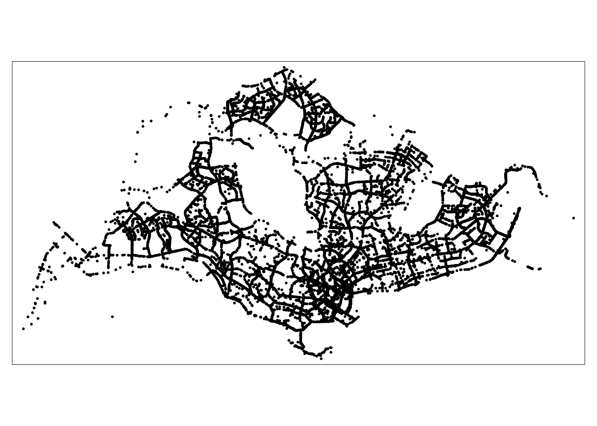

pacman::p_load(arrow, lubridate, sf, tmap, tidyverse, maptools, sp, raster, spatstat, spNetwork, classInt, viridis)Take-home Exercise 1: Application of Spatial Point Patterns Analysis to discover the geographical distribution of Grab hailing services in Singapore
0. Overview
These are the 3 datasets I will be using in Take-Home Exercise 1
0.1 OpenStreetMap
OpenStreetMap dataset consist of Malaysia, Singapore and Brunei regions in Polygon format in shp file. We are going to extract the Singapore region only, and gradually remove the outer islands of Singapore, to examine the traffic flow using GrabPosisi dataset and Master Plan 2019 Subzone Boundary (No Sea) dataset.
0.2 Master Plan 2019 Subzone Boundary (No Sea) Dataset
In this dataset, the Planning Regions are divided into smaller Planning Areas. Each Planning Area is further divided into smaller subzones which are usually centred around a focal point such as neighbourhood centre or activity node. We will only be inspecting neighbourhoods in this dataset as the file is too big for us to inspect the the whole of Singapore. This is by taking the intersection between Master Plan 2019 and OpenStreetMap.
The Master Plan is a forward looking guiding plan for Singapore’s development in the medium term over the next 10 to 15 years and the planning boundaries may not coincide with existing developments for some areas.
0.3 Grab-Posisi - Southeast Asia’s First Comprehensive GPS Trajectory Dataset
Grab-Posisi dataset contains in total 84K trajectories that consist of more than 80 million GPS pings and cover over 1 million km. The average trajectory length is 11.94 km and the average duration per trip is 21.50 minutes. Each trajectory is serialised in a file in Apache Parquet format. The whole dataset size is around 2 GB. Each GPS ping is associated with values for a trajectory ID, latitude, longitude, timestamp (UTC), accuracy level, bearing and speed. The GPS sampling rate is 1 second, which is the highest among all the existing open source datasets.
We will be using the GrabPosisi dataset to inspect only a neighburhood by taking the intersection o GrabPosisi and OpenStreetMap.
1. Loading Data
In this section I will install and load my arrow, lubridate, sf, tmap, tidyverse, maptools, sp, raster, spatstat, spNetwork, classInt and viridis packages which will be used widely in this exercise.
1.1 Importing a geospatial data, Road set layer from OpenStreetMap
There are 3 files imported here, OpenStreetMap, Master Plan 2019 Subzone Boundary (No Sea) and GrabPosisi. Importing road layer from malaysia-singapore-brunei-latest-free.shp as roads.
We could use either st_read() or readOGR() to read our geospatial data, but it is better to read it in as a simple features dataframe first and then use as_Spatial() to convert it to a Spatial* object when necessary. This way, I can perform visualisations on both the simple features dataframe and Spatial* object more easily.
roads <- st_read(dsn = "data/geospatial/malaysia-singapore-brunei-latest-free.shp", layer = "gis_osm_roads_free_1")Transforming roads to 3414, SVY21 file format
roads <- st_transform(roads, 3414)
roads1.2 Importing a geospatial data Master Plan 2019 Subzone Boundary (No Sea)
Importing geospatial data Master Plan 2019 Subzone Boundary (No Sea) as MPSZ down below.
mpsz <- st_read(dsn = "data/geospatial/MPSZ-2019", layer = "MPSZ-2019")Reading layer `MPSZ-2019' from data source
`/Users/fangqilim/fangqi611/IS415-GAA/Take-home_Ex/Take-home_Ex01/data/geospatial/MPSZ-2019'
using driver `ESRI Shapefile'
Simple feature collection with 332 features and 6 fields
Geometry type: MULTIPOLYGON
Dimension: XY
Bounding box: xmin: 103.6057 ymin: 1.158699 xmax: 104.0885 ymax: 1.470775
Geodetic CRS: WGS 841.3 Importing a aspatial data Grab Data Frame, GrabPosisi
Using read_parquet() function to import GrabPosisi aspatial file down below.
grab <- read_parquet("data/aspatial/GrabPosisi/part-00000-8bbff892-97d2-4011-9961-703e38972569.c000.snappy.parquet")2. Getting the Geospatial Data Layer
2.1 Extracting Grab taxi location points by origins
Listing GrabPosisi table
list(grab)st_crs(grab)We have to transform our dataframes into sf objects, and then verify and transform our assigned CRS for our aspatial datasets. Most of these dataset are using WGS84 (ESPG Code 4326) on account of using Latitude and Longitude - so we can do these two things in one go:
grab_sf <- st_as_sf(grab,
coords = c("rawlng", "rawlat"),
crs=4326) %>%
st_transform(crs = 3414)Viewing grab_sf file Checking the newly-converted Spatial* classes
grab_sfExtracting pingtimestamp from grab dataset in order to get the origin and destination points in the next steps! pingstimestamp is the timing when the customer board or alight the car
grab$pingtimestamp <- as_datetime(grab$pingtimestamp)Getting the origin points which is the location where the driver picks up the customer from:
origin_grab <- grab_sf %>%
group_by(trj_id) %>%
arrange(pingtimestamp) %>%
filter(row_number()==1) %>%
mutate(weekday = wday(pingtimestamp,
label = TRUE,
abbr = TRUE),
start_hr = factor(hour(pingtimestamp)),
day = factor(mday(pingtimestamp)))Importing origin_grab due to the large file size
write_rds(origin_grab, "data/rds/origin_grab.rds")origin_grab <- read_rds("data/rds/origin_grab.rds")Getting the destination points which is the location where the ride ends and where the customer alights:
destination_grab_sf <- grab_sf %>%
group_by(trj_id) %>%
arrange(desc(pingtimestamp)) %>%
filter(row_number()==1) %>%
mutate(weekday = wday(pingtimestamp,
label = TRUE,
abbr = TRUE),
end_hr = factor(hour(pingtimestamp)),
day = factor(mday(pingtimestamp)))Importing destination_grab due to the large file size so it will not cause any loading issues for us!
write_rds(destination_grab_sf, "data/rds/destination_grab.rds")destination_grab <- read_rds("data/rds/destination_grab.rds")Reflecting origin_grab, the pick ups points in geospatial format here using origin_grab and destination_grab since we got the points already!
tmap_mode('plot')
tm_shape(origin_grab)+
tm_dots()
2.2 Extracting Road layer within Singapore excluding outer islands.
Checking the geometry type for mpsz
st_geometry(mpsz)Geometry set for 332 features
Geometry type: MULTIPOLYGON
Dimension: XY
Bounding box: xmin: 103.6057 ymin: 1.158699 xmax: 104.0885 ymax: 1.470775
Geodetic CRS: WGS 84
First 5 geometries:glimpse(mpsz)Rows: 332
Columns: 7
$ SUBZONE_N <chr> "MARINA EAST", "INSTITUTION HILL", "ROBERTSON QUAY", "JURON…
$ SUBZONE_C <chr> "MESZ01", "RVSZ05", "SRSZ01", "WISZ01", "MUSZ02", "MPSZ05",…
$ PLN_AREA_N <chr> "MARINA EAST", "RIVER VALLEY", "SINGAPORE RIVER", "WESTERN …
$ PLN_AREA_C <chr> "ME", "RV", "SR", "WI", "MU", "MP", "WI", "WI", "SI", "SI",…
$ REGION_N <chr> "CENTRAL REGION", "CENTRAL REGION", "CENTRAL REGION", "WEST…
$ REGION_C <chr> "CR", "CR", "CR", "WR", "CR", "CR", "WR", "WR", "CR", "CR",…
$ geometry <MULTIPOLYGON [°]> MULTIPOLYGON (((103.8802 1...., MULTIPOLYGON (…head(mpsz, n=5) Simple feature collection with 5 features and 6 fields
Geometry type: MULTIPOLYGON
Dimension: XY
Bounding box: xmin: 103.6537 ymin: 1.216215 xmax: 103.8811 ymax: 1.29742
Geodetic CRS: WGS 84
SUBZONE_N SUBZONE_C PLN_AREA_N PLN_AREA_C REGION_N
1 MARINA EAST MESZ01 MARINA EAST ME CENTRAL REGION
2 INSTITUTION HILL RVSZ05 RIVER VALLEY RV CENTRAL REGION
3 ROBERTSON QUAY SRSZ01 SINGAPORE RIVER SR CENTRAL REGION
4 JURONG ISLAND AND BUKOM WISZ01 WESTERN ISLANDS WI WEST REGION
5 FORT CANNING MUSZ02 MUSEUM MU CENTRAL REGION
REGION_C geometry
1 CR MULTIPOLYGON (((103.8802 1....
2 CR MULTIPOLYGON (((103.8376 1....
3 CR MULTIPOLYGON (((103.8341 1....
4 WR MULTIPOLYGON (((103.7125 1....
5 CR MULTIPOLYGON (((103.8472 1....Plotting mpsz with the outer islands
plot(mpsz)plot(st_geometry(mpsz))st_crs(mpsz)Coordinate Reference System:
User input: WGS 84
wkt:
GEOGCRS["WGS 84",
DATUM["World Geodetic System 1984",
ELLIPSOID["WGS 84",6378137,298.257223563,
LENGTHUNIT["metre",1]]],
PRIMEM["Greenwich",0,
ANGLEUNIT["degree",0.0174532925199433]],
CS[ellipsoidal,2],
AXIS["latitude",north,
ORDER[1],
ANGLEUNIT["degree",0.0174532925199433]],
AXIS["longitude",east,
ORDER[2],
ANGLEUNIT["degree",0.0174532925199433]],
ID["EPSG",4326]]Transforming mpsz t0 3414, SVY21 as that is the file format we want for all of our data, similar to what we did for the grab dataset
mpsz3414 <- st_transform(mpsz, 3414)st_crs(mpsz3414)Coordinate Reference System:
User input: EPSG:3414
wkt:
PROJCRS["SVY21 / Singapore TM",
BASEGEOGCRS["SVY21",
DATUM["SVY21",
ELLIPSOID["WGS 84",6378137,298.257223563,
LENGTHUNIT["metre",1]]],
PRIMEM["Greenwich",0,
ANGLEUNIT["degree",0.0174532925199433]],
ID["EPSG",4757]],
CONVERSION["Singapore Transverse Mercator",
METHOD["Transverse Mercator",
ID["EPSG",9807]],
PARAMETER["Latitude of natural origin",1.36666666666667,
ANGLEUNIT["degree",0.0174532925199433],
ID["EPSG",8801]],
PARAMETER["Longitude of natural origin",103.833333333333,
ANGLEUNIT["degree",0.0174532925199433],
ID["EPSG",8802]],
PARAMETER["Scale factor at natural origin",1,
SCALEUNIT["unity",1],
ID["EPSG",8805]],
PARAMETER["False easting",28001.642,
LENGTHUNIT["metre",1],
ID["EPSG",8806]],
PARAMETER["False northing",38744.572,
LENGTHUNIT["metre",1],
ID["EPSG",8807]]],
CS[Cartesian,2],
AXIS["northing (N)",north,
ORDER[1],
LENGTHUNIT["metre",1]],
AXIS["easting (E)",east,
ORDER[2],
LENGTHUNIT["metre",1]],
USAGE[
SCOPE["Cadastre, engineering survey, topographic mapping."],
AREA["Singapore - onshore and offshore."],
BBOX[1.13,103.59,1.47,104.07]],
ID["EPSG",3414]]Extracting PLN_AREA_N from mpsz3414, Singapore island without it’s outer islands as that is what we want and we do this first so it is easier to reflect the GrabPosisi and OpenStreetMap later on
outer_islands <- mpsz3414[grep("island", mpsz3414$PLN_AREA_N, ignore.case = TRUE), ]
print(outer_islands)Simple feature collection with 6 features and 6 fields
Geometry type: MULTIPOLYGON
Dimension: XY
Bounding box: xmin: 8012.578 ymin: 15748.72 xmax: 56396.44 ymax: 46931.6
Projected CRS: SVY21 / Singapore TM
SUBZONE_N SUBZONE_C PLN_AREA_N PLN_AREA_C
4 JURONG ISLAND AND BUKOM WISZ01 WESTERN ISLANDS WI
7 SUDONG WISZ03 WESTERN ISLANDS WI
8 SEMAKAU WISZ02 WESTERN ISLANDS WI
9 SOUTHERN GROUP SISZ02 SOUTHERN ISLANDS SI
10 SENTOSA SISZ01 SOUTHERN ISLANDS SI
304 NORTH-EASTERN ISLANDS NESZ01 NORTH-EASTERN ISLANDS NE
REGION_N REGION_C geometry
4 WEST REGION WR MULTIPOLYGON (((14557.7 304...
7 WEST REGION WR MULTIPOLYGON (((15772.59 21...
8 WEST REGION WR MULTIPOLYGON (((19843.41 21...
9 CENTRAL REGION CR MULTIPOLYGON (((30870.53 22...
10 CENTRAL REGION CR MULTIPOLYGON (((26879.04 26...
304 NORTH-EAST REGION NER MULTIPOLYGON (((52567.44 46...Subtracting the geometry of the union of the outer islands from the geometry in mpsz3414 we get the costal region of SG without the outer islands.
outerislands_sf <- st_difference(mpsz3414, st_union(outer_islands))
plot(outerislands_sf)Extracting roads in Singapore within Singapore boundary without outer islands, sgroads usibg outerislands_sf and roafs intersection we only get the roads in SG. Checking the newly-converted Spatial* classes.
sgroads <- st_intersection(outerislands_sf, roads)
sgroadsImporting sgroads due to the large file size
write_rds(sgroads, "data/rds/sgroads.rds")sgroads <- read_rds("data/rds/sgroads.rds")2.3 Extracting Singapore boundary layer excluding outer islands
A representation of Singapore’s geographical boundary, omitting the outer islands
outerislands_sf <- outerislands_sf %>%
st_union() plot(outerislands_sf)
plot(st_geometry(outerislands_sf))2.3.1 Creating owin object
Converting sf format for outer islands into spatial class the sp format because you cannot do it directly.
outerislands <- as_Spatial(outerislands_sf)Spatstat requires the analytical data to be in ppp object form, but since there is no way to directly convert a Spatial* classes into ppp object, we’ll need to convert the Spatial* classes into a generic Spatial object first, then convert the generic sp object into ppp object form.
outerislands_sp <- as(outerislands, "SpatialPolygons")Checking the newly-converted Spatial* classes
outerislands_spclass : SpatialPolygons
features : 1
extent : 2667.538, 55941.94, 21448.47, 50256.33 (xmin, xmax, ymin, ymax)
crs : +proj=tmerc +lat_0=1.36666666666667 +lon_0=103.833333333333 +k=1 +x_0=28001.642 +y_0=38744.572 +ellps=WGS84 +towgs84=0,0,0,0,0,0,0 +units=m +no_defs I am confining the analysis with a geographical area. In spatstat, the object called owin is specially designed to represent this polygonal region. This produces the Singapore boundary layer excluding outer islands.
sg_owin <- as(outerislands_sp, "owin")Usually, when analysing spatial point patterns, we’ll confine our analysis within a certain geographical area - such as the Singapore boundary. In spatstat, an object called owin is specially designed to represent this polygonal region.
plot(sg_owin)
summary(sg_owin)Window: polygonal boundary
37 separate polygons (29 holes)
vertices area relative.area
polygon 1 71 5.63061e+03 8.47e-06
polygon 2 10 1.99717e+02 3.01e-07
polygon 3 12667 6.63014e+08 9.98e-01
polygon 4 (hole) 3 -3.41897e-05 -5.14e-14
polygon 5 (hole) 23 -1.99656e+01 -3.00e-08
polygon 6 (hole) 35 -1.38385e+02 -2.08e-07
polygon 7 (hole) 19 -4.39650e+00 -6.62e-09
polygon 8 (hole) 270 -1.21455e+03 -1.83e-06
polygon 9 (hole) 3 -4.95057e-02 -7.45e-11
polygon 10 (hole) 3 -3.65499e-03 -5.50e-12
polygon 11 (hole) 3 -7.43616e-06 -1.12e-14
polygon 12 (hole) 3 -3.39794e-04 -5.11e-13
polygon 13 (hole) 38 -7.79904e+03 -1.17e-05
polygon 14 (hole) 3 -5.99535e-04 -9.02e-13
polygon 15 (hole) 3 -3.04561e-04 -4.58e-13
polygon 16 (hole) 6 -8.37554e-01 -1.26e-09
polygon 17 (hole) 3 -4.46076e-04 -6.71e-13
polygon 18 (hole) 4 -2.86396e-01 -4.31e-10
polygon 19 (hole) 3 -1.81439e-04 -2.73e-13
polygon 20 (hole) 3 -8.68789e-04 -1.31e-12
polygon 21 (hole) 317 -5.11280e+04 -7.69e-05
polygon 22 (hole) 5 -2.92235e-04 -4.40e-13
polygon 23 (hole) 5 -2.44411e-04 -3.68e-13
polygon 24 (hole) 4 -2.18616e-04 -3.29e-13
polygon 25 (hole) 4 -4.28453e-01 -6.45e-10
polygon 26 (hole) 4 -2.54488e-04 -3.83e-13
polygon 27 (hole) 3 -9.59850e-05 -1.44e-13
polygon 28 (hole) 41 -4.01660e+04 -6.04e-05
polygon 29 (hole) 3 -4.14099e-04 -6.23e-13
polygon 30 (hole) 3 -4.52043e-05 -6.80e-14
polygon 31 (hole) 3 -3.90173e-05 -5.87e-14
polygon 32 (hole) 5 -3.64686e-02 -5.49e-11
polygon 33 30 2.80002e+04 4.21e-05
polygon 34 27 1.50315e+04 2.26e-05
polygon 35 285 1.61128e+06 2.42e-03
polygon 36 91 1.49663e+04 2.25e-05
polygon 37 71 8.18750e+03 1.23e-05
enclosing rectangle: [2667.54, 55941.94] x [21448.47, 50256.33] units
(53270 x 28810 units)
Window area = 664597000 square units
Fraction of frame area: 0.4333. Deriving traditional Kernel Density Estimation (KDE) layers
This is derived using the grab dataset This code below is converting a spatial dataset named “origin_grab” into a format suitable for analyzing and studying point patterns.
origingrab_ppp <- as.ppp(origin_grab)Retrieving more information of origingrab_ppp
summary(origingrab_ppp)Marked planar point pattern: 28000 points
Average intensity 2.47621e-05 points per square unit
Coordinates are given to 3 decimal places
i.e. rounded to the nearest multiple of 0.001 units
marks are of type 'character'
Summary:
Length Class Mode
28000 character character
Window: rectangle = [3661.47, 49845.23] x [25201.14, 49685.08] units
(46180 x 24480 units)
Window area = 1130760000 square unitsPlotting it out
plot(origingrab_ppp)Plotting origin_grab, whole of Singapore
plot(origin_grab)3.1 Converting owin object into ppp format
This is so that we can remove duplicated points
sg_owin <- as.owin(outerislands_sf)
#as.ppp to convert point tableplot(sg_owin)Extracting the specific areas in Singapore which is Ponggol, Tampines, Choa Chu Kang and Jurong West respectively
pg <- mpsz %>%
filter(PLN_AREA_N == "PUNGGOL")
tm <- mpsz %>%
filter(PLN_AREA_N == "TAMPINES")
ck <- mpsz %>%
filter(PLN_AREA_N == "CHOA CHU KANG")
jw <- mpsz %>%
filter(PLN_AREA_N == "JURONG WEST")We are plotting each area one by one, Ponggol, Tampines, Choa Chu Kang and Jurong West respectively below. Punggol layer
par(mfrow=c(2,2))
plot(pg, main = "Ponggol")Tampines layer
plot(tm, main = "Tampines")Choa Chu Kang layer
plot(ck, main = "Choa Chu Kang")Jurong West layer
plot(jw, main = "Jurong West")